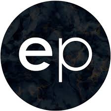

WORK EXPERIENCES
SCHEELS HOME AND HARDWARE
The summer after my Junior year, I did my required internship at Scheels Home and Hardware as a Home Accents Sales Associate. I was expected to learn about the vendors we carried as well as their different fabrics, finishes, and warranties. I was also responsible for quoting prices, writing bid sheets, and working with customers to design and find furniture they love. Every once and a while, I would have to help with the layout of the furniture in the space as well. I was also given the opportunity to work with the designer and decorators that worked there. With them, I was able to go out and help furnish clients' homes and learn about how to measure for Hunter Douglas custom blinds. This wasn't a typical internship, but I learned a lot about the financial side of design as well as how much of an impact designers have on clients and their ability to make a house feel like home.
EVOKE PROJECTS
The summer of 2018, I had the amazing opportunity to travel to Australia and intern with a company called Evoke Projects. I was given the chances to do numerous tasks and activities with the team that was based out of Sydney, Australia. Some of these included touring show rooms, attending meetings with suppliers and clients, organizing the materials library, creating furniture and materials templates for them in ArchiCad, and so much more. It was an amazing opportunity to grow as an individual as well as learn more about the profession and what I'll be doing after I graduate college.
- 